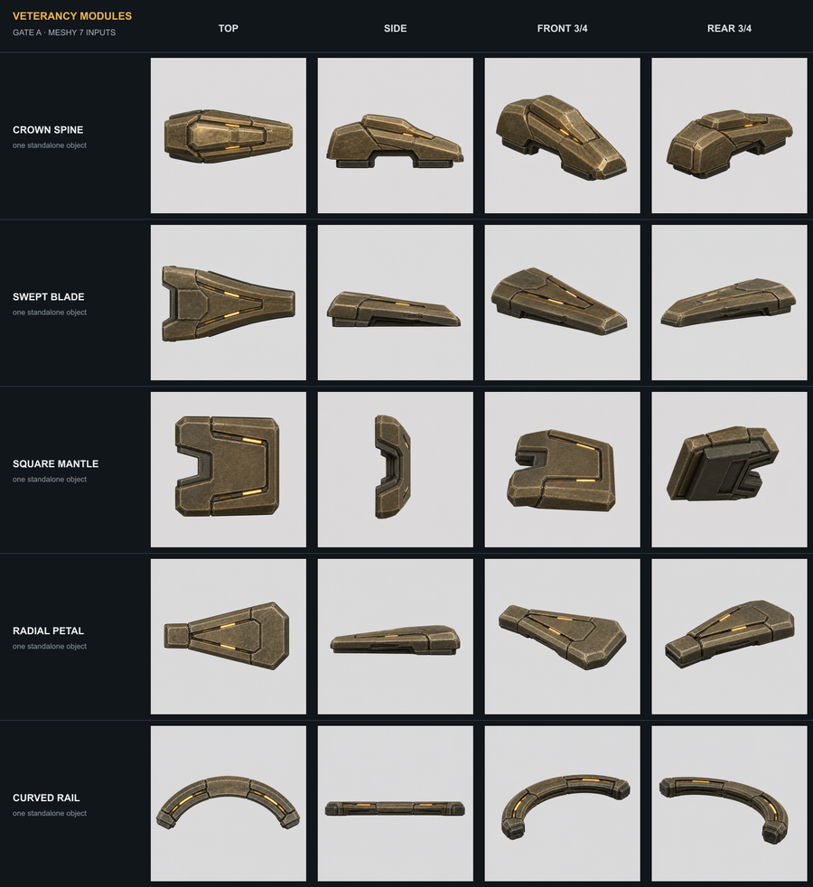
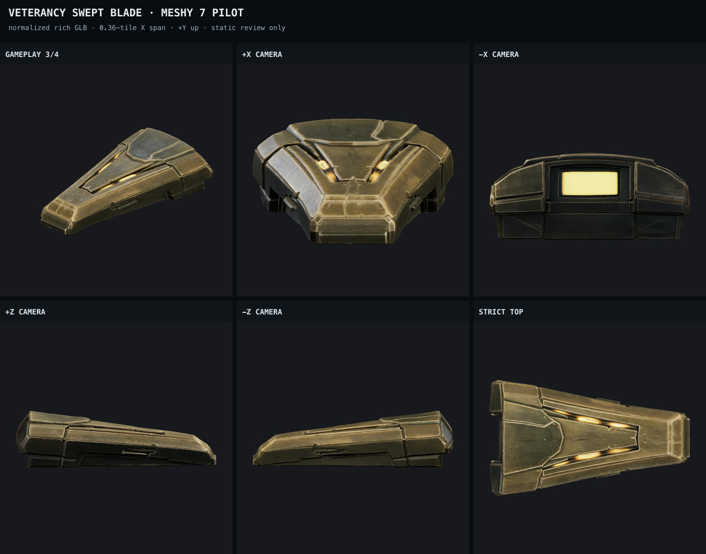
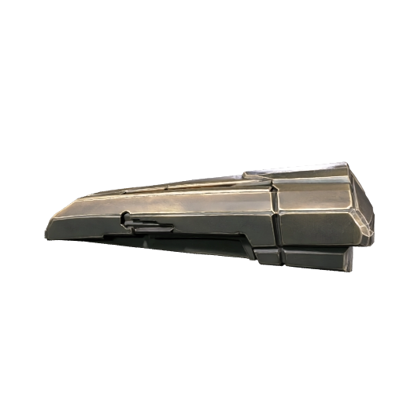
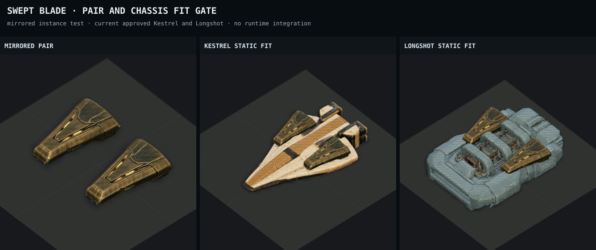
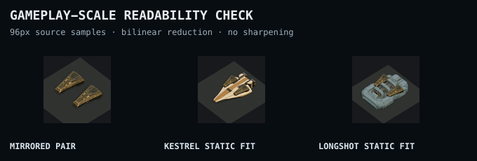
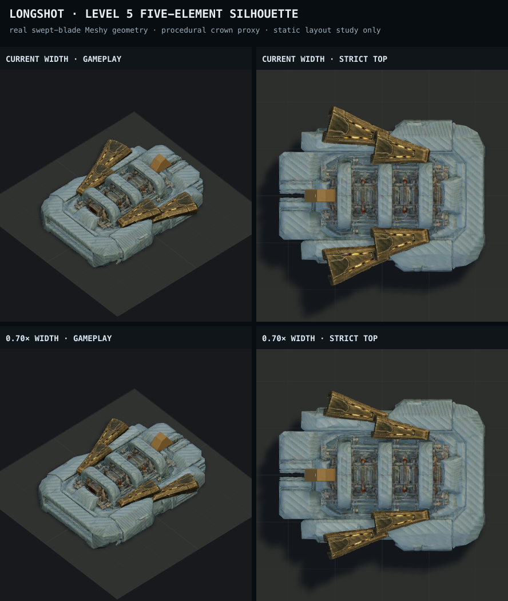
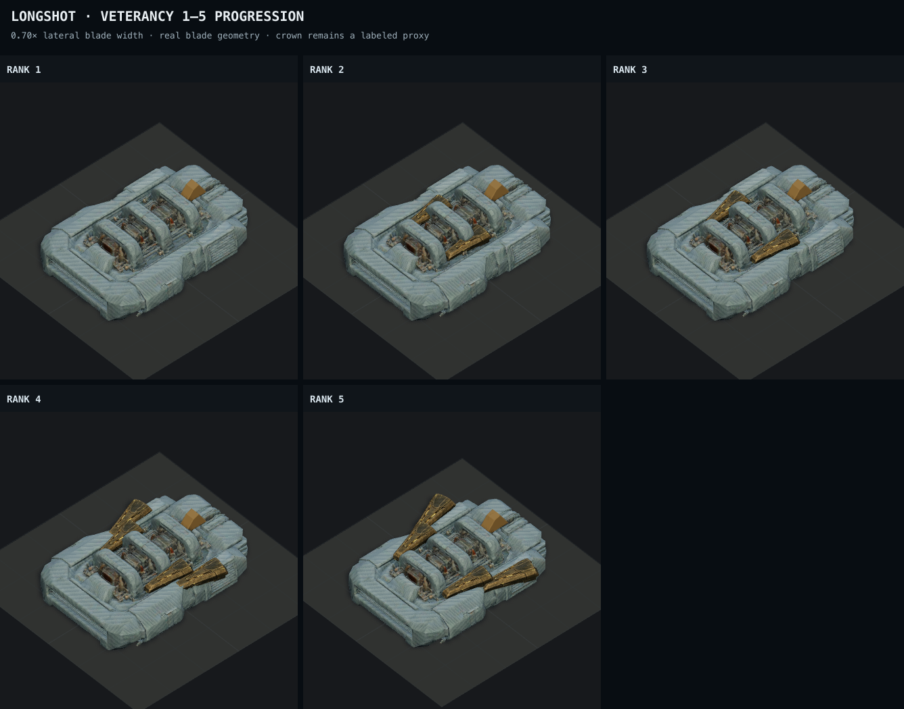
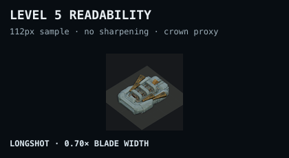

Meshy 7 veterancy pilot
Five coherent module inputs, one paid swept-blade model, deterministic static proof. No runtime integration and no calls for the remaining four.
The model stayed coherent, mirrors cleanly, and reads as veteran armor on both required chassis after correcting the provider's reversed facing.
1 · Gate A input family
The sheet below is review evidence. Meshy received four separate 1254×1254 PNGs for the swept blade, with the front three-quarter view first.

2 · Provider result and normalized views




3 · Mirroring and chassis fit


4 · What level 5 could look like
This is the most truthful level-5 preview possible from one pilot: Longshot reuses the real swept-blade GLB for both pairs. The small centered crown is a deliberately simple procedural proxy because its Meshy model has not been generated.



What still needs a decision
- The rich result is 65.4 MB and 1.999 million triangles. It is deliberately not a runtime candidate; lean work belongs after silhouette approval.
- The level-5 study favors a 0.70 lateral scale: 0.146 tile wide at the planned 0.36-tile length. It stays chunky without crowding the five-piece composition.
- The crown-spine is still the least certain ungenerated concept and deserves an extra look before spending its Gate C call.
Open the machine-readable pilot audit · Open all Gate A hashes and dimensions